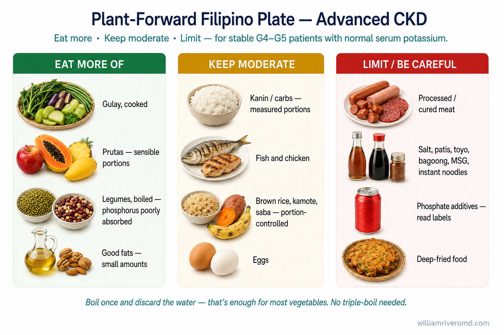
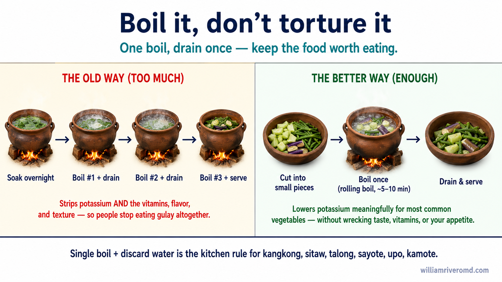
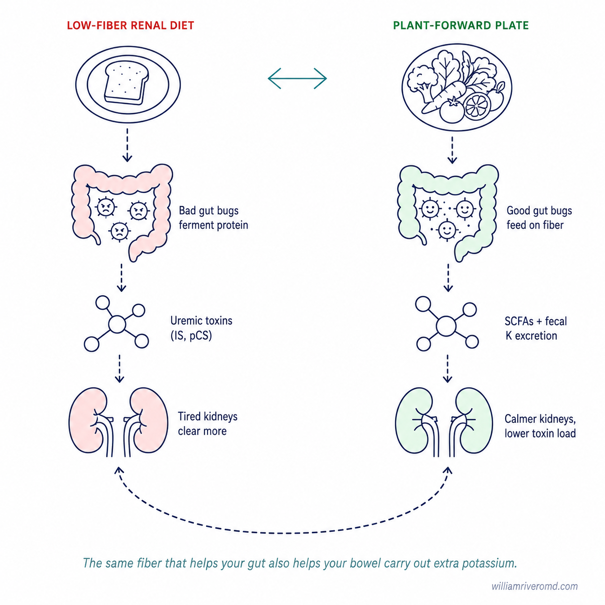
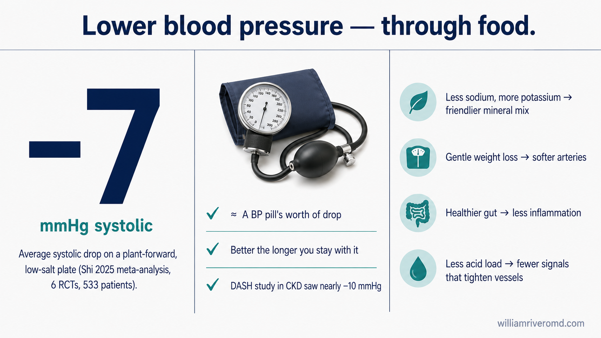
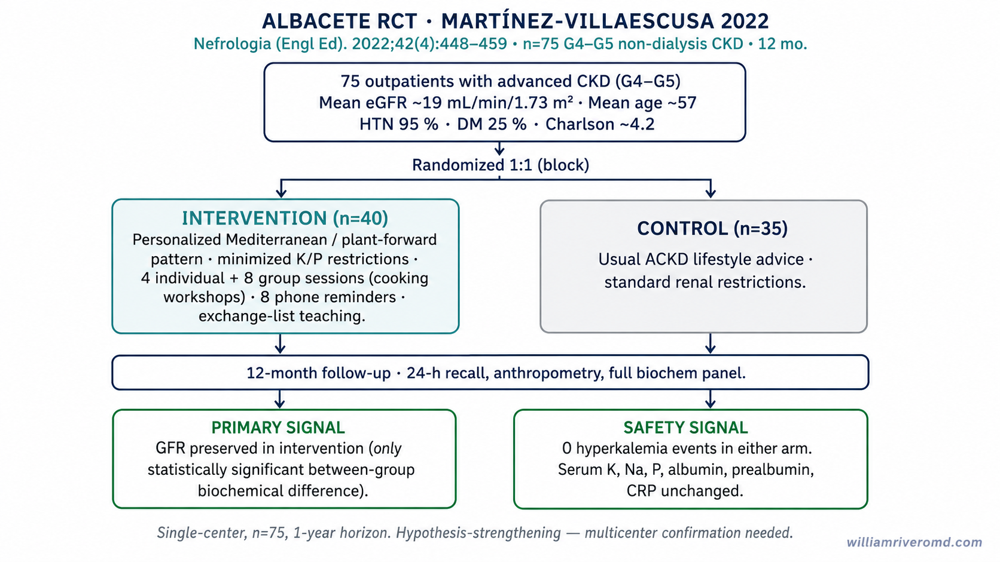
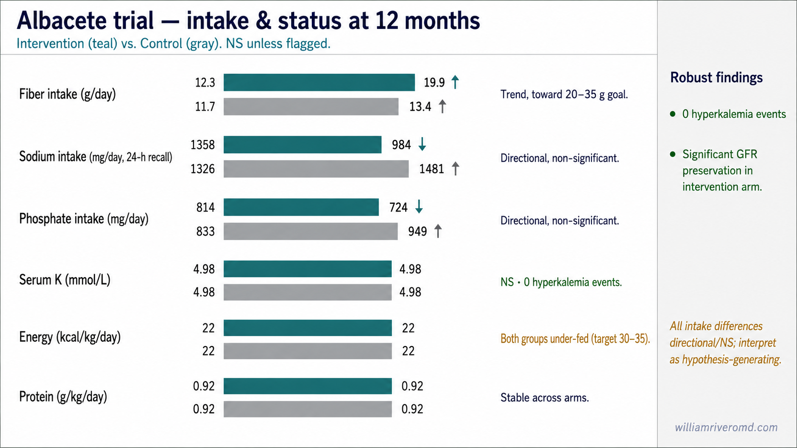
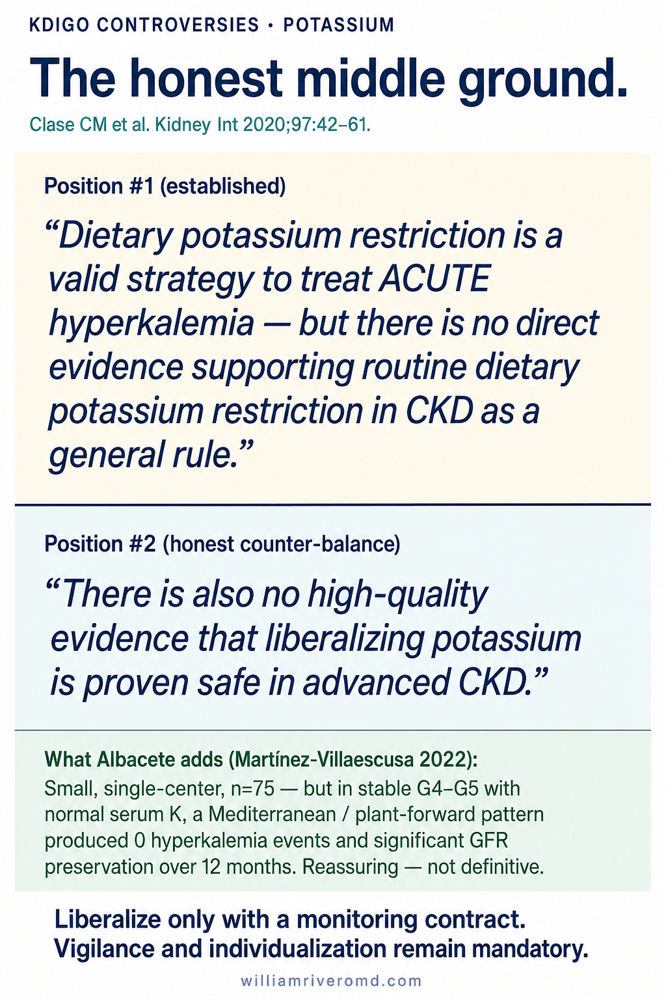
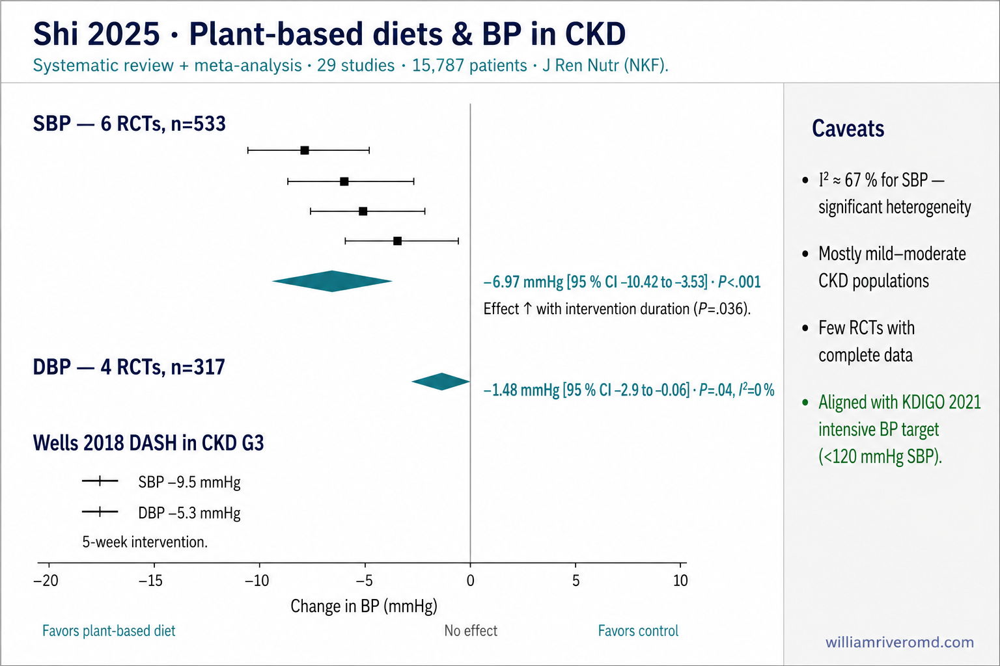
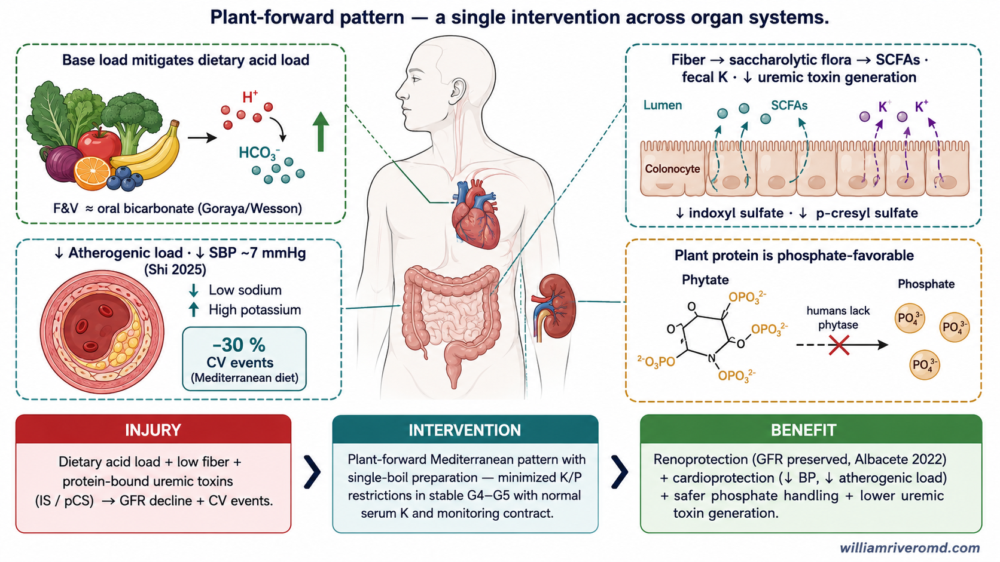
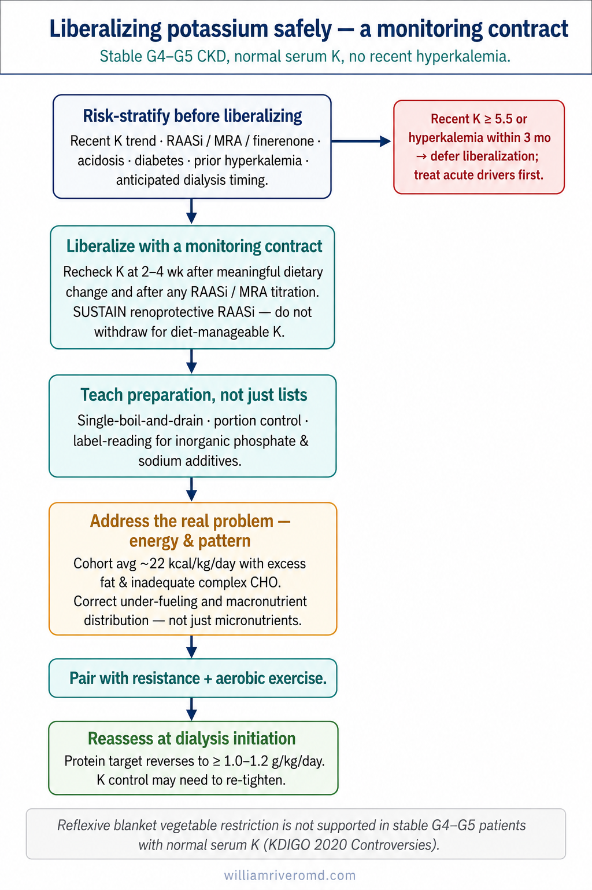

A different way of thinking about the renal diet.Isang bagong paraan ng pag-iisip tungkol sa renal diet.Usa ka bag-ong panlantaw sa renal diet.Metung a bayung pamiisip tungkul king renal diet.
For decades, kidney patients have been handed a list of forbidden foods — bananas, vegetables, beans, nuts — out of fear that potassium would stop the heart. This guide explains why that fear, applied as a blanket rule, may do more harm than good in advanced (pre-dialysis) CKD. Sa loob ng mga dekada, binigyan ang mga pasyente ng sakit sa bato ng listahan ng mga ipinagbabawal na pagkain — saging, gulay, beans, mga mani — dahil sa takot na huminto ang puso dahil sa potassium. Ipinapaliwanag ng gabay na ito kung bakit ang takot na iyon, kapag ginawang panuntunan para sa lahat, ay maaaring mas makasama kaysa makatulong sa advanced (pre-dialysis) CKD. Sulod sa daghang dekada, gihatagan ang mga pasyente sa sakit sa kidney og listahan sa gidili nga pagkaon — saging, utanon, beans, mani — tungod sa kahadlok nga maundang ang kasingkasing tungod sa potassium. Gipasabot niini nga giya nganong kanang kahadlok, kon gihimong lagda alang sa tanan, mahimong mas makadaut kaysa makatabang sa advanced (pre-dialysis) CKD. King dakal a dekada, binigyan da reng pasyenteng atin sakit kareng bato ning listahan ding pagkaing milulu — saging, gule, beans, mani — uli na ning tatakut da na nung sasagad ya ing potassium agyu na keng pusu. Pepalino na ning giya nung bakit ing tatakut a ita, nung gawan yang patakaran a para king kekayu ngan, kayanan na pang mas masama kesa makatulung king mayubat (pre-dialysis) CKD.
A 2022 randomized trial put it to the test: patients with stage 4–5 CKD ate a more liberal, vegetable- and fiber-rich Mediterranean-style diet — and had zero episodes of high potassium, stable blood chemistry, and a slower decline in kidney function than the restricted group. Sinubukan ito ng isang randomized trial noong 2022: ang mga pasyente sa stage 4–5 CKD ay kumain ng mas maluwag, mayaman-sa-gulay-at-fiber na Mediterranean-style na diyeta — at nagkaroon ng zero episode ng mataas na potassium, matatag na kemika ng dugo, at mas mabagal na pagbaba ng kidney function kaysa sa restricted na grupo. Gisulayan kini sa usa ka randomized trial sa 2022: ang mga pasyente sa stage 4–5 CKD nikaon og mas luag, dato-sa-utanon-ug-fiber nga Mediterranean-style nga diyeta — ug walay bisan usa nga episode sa taas nga potassium, lig-on nga kemika sa dugo, ug mas hinay nga pagkunhod sa kidney function kaysa sa restricted nga grupo. Sinubukan da ya iyni ning metung a randomized trial king 2022: deng pasyente king stage 4–5 CKD mengan lang mas maluag, mayaman-king-gule-at-fiber a Mediterranean-style a diet — at atin lang alang episode ning matas a potassium, matatag a chemistry ning daya, at mas malagua a pamanyibabad ning paksian kesa king restricted a grupo.
One important limit before we beginIsang mahalagang limitasyon bago tayo magsimulaUsa ka importante nga limitasyon una pa kita magsugodMetung a importanting limitasyun bayu tamung migumpisa
This guide is about advanced CKD before dialysis. It is not a license to eat unlimited high-potassium food. If you have ever had a high potassium reading, are on dialysis, or take medicines that raise potassium (RAAS blockers, MRAs, finerenone), your plan must be individualized. Always confirm changes with Dr. Rivero or your own physician — and keep your blood tests on schedule. Tungkol ang gabay na ito sa advanced CKD bago ang dialysis. Hindi ito lisensya para kumain ng walang-limit na high-potassium na pagkain. Kung nagkaroon kang mataas na potassium reading, nasa dialysis ka, o umiinom ng gamot na nagpapataas ng potassium (RAAS blockers, MRAs, finerenone), kailangan i-personalize ang iyong plano. Palaging kumpirmahin ang mga pagbabago kay Dr. Rivero o sa iyong sariling doktor — at panatilihin ang regular na blood test. Mahitungod kini nga giya sa advanced CKD una pa ang dialysis. Dili kini lisensya nga mokaon og walay-utlanan nga high-potassium nga pagkaon. Kon nakabaton ka og taas nga potassium reading, naa sa dialysis, o niinom og tambal nga magpataas sa potassium (RAAS blockers, MRAs, finerenone), kinahanglan i-personalize ang imong plano. Kanunay kumpirmaha ang mga kausaban kang Dr. Rivero o sa imong kaugalingong doktor — ug ipadayon ang regular nga blood test. Ing giya yan tungkul ya king mayubat a CKD bayu ing dialysis. E ya lisensya para mengan tamung walang-limit a high-potassium a pamangan. Nung mengkayanan mung atin matas a potassium reading, atyu kang dialysis, o tatangapan mung gamot a magpapatas king potassium (RAAS blockers, MRAs, finerenone), kailangan a personalisadu ya ing kekang plano. Permi mu kunpirman deng kapalitan kang Dr. Rivero o king kekang sariling doktor — at panatilian ya ing regular a blood test.
Two kinds of "malnutrition" — and one trap.Dalawang uri ng "malnutrisyon" — at isang bitag.Duha ka klase sa "malnutrisyon" — ug usa ka lit-ag.Aduang klase ning "malnutrisyon" — at metung a silu.
When doctors say a kidney patient is "malnourished," most people picture someone thin and wasting away. That happens — but it is only half the story. Malnutrition really means the body is not getting the right balance of nutrients. That includes getting too much of the wrong things just as much as too little of the good things. Kapag sinasabi ng doktor na "malnourished" ang isang pasyenteng may sakit sa bato, iniisip ng karamihan ang isang taong payat at unti-unting nauubos. Nangyayari iyon — pero kalahati pa lang iyon ng kuwento. Ang malnutrisyon ay nangangahulugan talaga na hindi nakakakuha ang katawan ng tamang balanse ng mga nutrient. Kasama doon ang sobrang dami ng maling pagkain, hindi lang kakaunti ng tamang pagkain. Kon moingon ang doktor nga "malnourished" ang usa ka pasyente sa sakit sa kidney, ang kadaghanan maghunahuna og usa ka tawo nga niwang ug nagkahanaw. Mahitabo kana — apan tunga ra kana sa istorya. Ang malnutrisyon nagpasabot nga ang lawas wala makadawat sa tamang balanse sa mga nutrient. Apil niini ang sobra sa sayop nga pagkaon, dili lang ang gamay ra sa husto nga pagkaon. Nung sabian na ning doktor a "malnourished" ya ing metung a pasyenteng atin sakit kareng bato, ing kakalalan iisipan da ya metung a taung pipayatan at pakaubsan. Magagawa ya iyan — pero kapitna na mu yan ning kuwentu. Ing malnutrisyon kabaldugan na atung katawan e na atatanggap ing tamang balanse ding nutrient. Kayabe na iyan ing sobrang dakal ning maling pamangan, e mu ing kuti ning ustung pamangan.
In the study behind this guide, about 7 in 10 patients were overweight or obese, with more body fat than is healthy — even though many were eating too few calories. How? Their diets were heavy in fat and low in the vegetables, fruit, and whole grains that the old "renal diet" told them to avoid. They were both over-fed and under-nourished at the same time. Sa pag-aaral na nagbigay-buhay sa gabay na ito, halos 7 sa 10 pasyente ay overweight o obese, na may mas maraming taba sa katawan kaysa sa malusog — kahit na marami sa kanila ay kumakain ng kakaunting calorie. Paano? Mabigat sa taba ang kanilang diyeta at kulang sa gulay, prutas, at whole grains na pinipigilan ng lumang "renal diet". Nasobrahan sila ng pagkain at kulang sa nutrisyon nang sabay. Sa pagtuon nga gisukad niini nga giya, mga 7 sa 10 pasyente nag-overweight o obese, nga adunay mas daghang tambok kay sa himsog — bisan og daghan ang nagkaon og gamay ra nga calorie. Giunsa? Bug-at sa tambok ang ilang diyeta ug kulang sa utanon, prutas, ug whole grains nga gilikayan sa karaan nga "renal diet". Sobra silag pagkaon ug kulang sa nutrisyon dungan. King pag-aral a ginawa ning giya yan, halus 7 keng 10 pasyente overweight o obese la, atin lang mas dakal a taba king katawan kesa keng malusog — agyang dakal kareng anya mengan lang kuting calorie. Makananung mayari? Mabayat king taba ing kekarang diyeta at kulang king gule, prutas, at whole grains a pinaglakuan ning lumang "renal diet". Sinobrang pamangan at kinukulang nutrisyon a sabayan.
Where the fear came from.Saan nagmula ang takot.Asa naggikan ang kahadlok.Nukarin menibat ya ing tatakut.
Damaged kidneys remove potassium more slowly. Very high blood potassium (hyperkalemia) can cause dangerous heart rhythms — so the instinct was simple: cut out everything with potassium. Vegetables, fruit, beans, and nuts were labeled "dangerous." Mas mabagal na inaalis ng nasirang bato ang potassium. Ang sobrang taas na potassium sa dugo (hyperkalemia) ay maaaring magdulot ng delikadong heart rhythm — kaya simpleng instinct ang nangyari: alisin lahat ng may potassium. Tinawag na "delikado" ang gulay, prutas, beans, at mga mani. Mas hinay nga gitangtang sa nadaut nga kidney ang potassium. Ang taas kaayo nga potassium sa dugo (hyperkalemia) makapahimo og delikado nga heart rhythm — busa simple ra ang instinct: tangtangon ang tanang adunay potassium. Gitawag og "delikado" ang utanon, prutas, beans, ug mani. Mas malagua a lilikuanan ning ablas a bato ing potassium. Ing pikamatas a potassium king daya (hyperkalemia) ayanan na ing makapagdulut delikadung heart rhythm — kanita simple ya ing instinct: tatanggalan tang ngan ing atin potassium. Tinawag dang "delikadu" deng gule, prutas, beans, at mani.
The problem is that those same foods are the foundation of a healthy diet for the heart, the gut, and the blood vessels. When we remove them, patients fill the gap with fat and processed food. The diet meant to protect the kidney quietly raises the risk of heart disease — the number-one killer in CKD. Ang problema ay ang mga pagkaing iyon ay pundasyon ng malusog na diyeta para sa puso, bituka, at mga ugat. Kapag inalis natin, pinupunan ng pasyente ang puwang ng taba at processed food. Ang diyetang dapat sana protektahan ang bato ay tahimik na nagtataas ng panganib ng sakit sa puso — ang number-one killer sa CKD. Ang problema mao nga kadtong mga pagkaon mao ang pundasyon sa himsog nga diyeta alang sa kasingkasing, tinai, ug mga ugat sa dugo. Kon tangtangon nato, ang pasyente magpuno sa gintang og tambok ug processed food. Ang diyeta nga gituyo nga manalipod sa kidney hilom nga nagdugang sa risgo sa sakit sa kasingkasing — ang number-one killer sa CKD. Ing problema, deng pamangang iyan ila reng pundasyun ning malusog a diyeta para king pusu, bituka, at deng ugat. Nung tatanggalan tila, deng pasyente paunan da ya ing puwang king taba at processed food. Ing diyetang dapat sana protektan ya ing bato, talimtim ya pin a magpatas king panganib ning sakit king pusu — ing number-one killer king CKD.
The hidden cost of the old renal dietAng nakatagong halaga ng lumang renal dietAng tinago nga balor sa karaan nga renal dietIng makatagung kapalit ning lumang renal diet
Less fiber → constipation & gut toxinsKulang sa fiber → constipation at gut toxinsGamay nga fiber → constipation ug gut toxinsKulang king fiber → constipation at gut toxins
Cutting fruit and vegetables drops fiber. The gut becomes constipated and the bacteria shift toward "bad" bugs that ferment protein and make uremic toxins your weak kidneys then have to clear. Kapag binawasan ang prutas at gulay, bumababa ang fiber. Nagiging constipated ang bituka at lumilipat ang bakterya sa "masamang" uri na fina-ferment ang protein at gumagawa ng uremic toxins na pilit nang inaalis ng mahinang bato. Kon kunhuran ang prutas ug utanon, mokunhod ang fiber. Mahimong constipated ang tinai ug mobalhin ang bakterya ngadto sa "daotan" nga matang nga magferment sa protein ug maghimo og uremic toxins nga pugson nang gitangtang sa maluya nga kidney. Nung iramdam ya ing prutas at gule, bumaba ya ing fiber. Bibili yang constipated ing bituka at mag-shift la deng bakterya king "marok" a matang a fina-ferment ne ing protein at gagawa lang uremic toxins a pakapilit nang tatanggalan na ning maluyang bato.
More fat & processed food → heart riskMas maraming taba at processed food → heart riskMas daghang tambok ug processed food → heart riskMas dakal a taba at processed food → heart risk
When vegetables are gone, calories come from fat and processed food. Cholesterol rises and cardiovascular risk goes up — and heart disease is what most kidney patients actually die from. Kapag wala nang gulay, ang calorie ay galing sa taba at processed food. Tumataas ang cholesterol at cardiovascular risk — at ang sakit sa puso ang talagang ikinakamatay ng karamihan ng pasyente sa bato. Kon wala na ang utanon, ang calorie nagagikan sa tambok ug processed food. Mosaka ang cholesterol ug cardiovascular risg — ug ang sakit sa kasingkasing mao gyud ang kasagaran nga ikamatay sa mga pasyente sa kidney. Nung alang nang gule, deng calorie menibat la king taba at processed food. Tatas ya ing cholesterol at cardiovascular risk — at ing sakit king pusu ya ing tutuung ikamate da reng kakalalan ding pasyenteng atin sakit kareng bato.
Bland meals → poor appetite & weight lossTabang na pagkain → mahinang gana at pagbaba ng timbangTabang nga pagkaon → maluya nga gana ug pagkunhod sa gibug-atonTabang a pamangan → maluyang gana at pamanguntor king katawan
Boring, restricted meals are eaten less. Patients lose appetite, lose muscle, and lose interest in food — exactly what kidney disease does not need. Mas kakaunti ang kinakain kapag boring at restricted ang pagkain. Nawawalan ng gana ang pasyente, nawawalan ng kalamnan, at nawawalan ng interes sa pagkain — eksakto ang hindi kailangan sa sakit sa bato. Mas gamay ang gikaon kon boring ug restricted ang pagkaon. Mawad-an og gana ang pasyente, mawad-an og unod, ug mawad-an og interes sa pagkaon — gyud nga dili gikinahanglan sa sakit sa kidney. Mas kuti la kakanan nung boring at restricted ya ing pamangan. Mawawalu yang gana ing pasyente, mawawalu yang kalamnan, at mawawalu yang interes king pamangan — ita pin ing e kailangan king sakit kareng bato.
What the study actually found.Ano talaga ang nakita ng pag-aaral.Unsa gyud ang nakit-an sa pagtuon.Nanu pin ya ing ilage ning pag-aral.
Researchers in Albacete, Spain followed 75 patients with advanced CKD (kidney function around 19 mL/min — stage 4 to 5, but not yet on dialysis) for one year. Forty received hands-on nutrition education built around a Mediterranean, vegetable-rich pattern with fewer of the usual restrictions. Thirty-five followed the standard restricted renal diet. The headline results: Sinubaybayan ng mga researcher sa Albacete, Spain ang 75 pasyenteng may advanced CKD (kidney function mga 19 mL/min — stage 4 hanggang 5, pero hindi pa nasa dialysis) sa loob ng isang taon. Apatnapu ang tumanggap ng hands-on na edukasyon sa nutrisyon na nakabatay sa Mediterranean, mayaman-sa-gulay na pattern na may mas kakaunting restrictions. Tatlumpu't lima ang sumunod sa standard restricted renal diet. Ang mga pangunahing resulta: Gisubay sa mga researcher sa Albacete, Spain ang 75 pasyente nga adunay advanced CKD (kidney function mga 19 mL/min — stage 4 hangtod 5, apan dili pa naa sa dialysis) sulod sa usa ka tuig. Kuwarenta ang nakadawat og hands-on nga edukasyon sa nutrisyon nga gibase sa Mediterranean, dato-sa-utanon nga pattern nga adunay mas gamay nga restrictions. Trayentay singko ang misunod sa standard restricted renal diet. Ang mga nag-unang resulta: Sinunbukan da ning researcher king Albacete, Spain ing 75 pasyenteng atin advanced CKD (kidney function mga 19 mL/min — stage 4 hanggang 5, dapot e pa atyu king dialysis) king metung a banwa. Apatapulu ing tinanggap king hands-on a edukasyun king nutrisyun a nakabase king Mediterranean, mayaman-king-gule a pattern a atin mas kuti a restriction. Talu't lima ing sinunud king standard restricted renal diet. Reng pekamasanting a resulta:
No one developed high potassiumWalang nagkaroon ng mataas na potassiumWalay nakabaton og taas nga potassiumAlang mengkayanan matas a potassium
Not a single hyperkalemia episode in either group, all year. Blood potassium stayed essentially the same. Walang isang hyperkalemia episode sa alinmang grupo sa loob ng isang taon. Halos parehas ang potassium sa dugo. Walay bisan usa nga hyperkalemia episode sa bisan unsa nga grupo sa tibuok tuig. Halos pareha lang ang potassium sa dugo. Alang ni metung mang hyperkalemia episode king bisan nanung grupo king bilug a banwa. Halus pareu mu ya ing potassium king daya.
Kidney function held up betterMas naprotektahan ang kidney functionMas naprotektahan ang kidney functionMas mepalansik ya ing kidney function
Kidney function held up better in the Mediterranean group — the only clear, statistically significant difference between the groups. Fiber intake also rose toward what a healthy adult should eat (from ~12 g/day to nearly 20 g/day), and blood markers of nutrition (albumin, protein) did not worsen. Mas naprotektahan ang kidney function sa Mediterranean group — ang tanging malinaw na statistically significant difference sa pagitan ng dalawang grupo. Tumaas din ang fiber intake patungo sa tama (mula sa ~12 g/araw hanggang halos 20 g/araw), at hindi sumama ang mga blood marker ng nutrisyon (albumin, protein). Mas naprotektahan ang kidney function sa Mediterranean group — ang bugtong tin-aw, statistically significant nga kalahian sa duha ka grupo. Misaka pud ang fiber intake padulong sa hustong sukod (gikan sa ~12 g/adlaw ngadto sa halos 20 g/adlaw), ug wala mograbe ang mga blood marker sa nutrisyon (albumin, protein). Mas mepalansik ya ing kidney function king Mediterranean group — ing kawasan, malino, statistically significant a kalahian king aduang grupu. Tinatas mu rin ya ing fiber intake patunggal king tama (manibat king ~12 g/aldo king halus 20 g/aldo), at e melale deng blood marker ning nutrisyun (albumin, protein).
In plain terms: eating more of the "forbidden" vegetables and fruit did not cause the feared potassium problem — and the kidneys did better. Sa simpleng salita: ang pagkain ng mas marami sa "ipinagbabawal" na gulay at prutas ay hindi nagdulot ng kinatatakutang problema sa potassium — at mas maayos ang kidney. Sa simple nga pulong: ang pagkaon og mas daghan sa "gidili" nga utanon ug prutas wala nakapahimo sa gikahadlokan nga problema sa potassium — ug mas maayo ang kidney. King simple a salita: ing pamangan king mas dakal a "milulu" a gule at prutas e ya migawa ning takutung problema king potassium — at mas masanting ya ing kidney.
The plant-forward kidney plate — Filipino style.Ang plant-forward na renal plate — Filipino style.Ang plant-forward nga renal plate — Filipino style.Ing plant-forward a renal plate — Filipino style.
You do not need olive oil and imported food to eat this way. The Mediterranean idea — lots of plants, good fats, less salt, less red and processed meat — translates directly to the Filipino table. Hindi mo kailangan ang olive oil at imported na pagkain para kumain ng ganito. Ang Mediterranean idea — maraming halaman, mabuting taba, kakaunting asin, kakaunting red at processed meat — ay diretsong umaakma sa Filipino table. Dili kinahanglan ang olive oil ug imported nga pagkaon aron mokaon sa ingon niini. Ang Mediterranean nga ideya — daghang tanom, maayong tambok, gamay nga asin, gamay nga red ug processed meat — direkta nga moangay sa Pilipino nga lamesa. E mu kailangan ing olive oil at imported a pamangan para mengan king kanyaman. Ing Mediterranean a ideya — dakal a tanaman, mayap a taba, kuting asin, kuting red at processed meat — direktung umaakma king Filipinung lamesa.
| Eat more of | Keep moderate | Limit / be careful |
|---|---|---|
| Gulay: kangkong, sitaw, talong, upo, sayote, malunggay (cooked). | Kanin / carbs in measured portions. | Processed & cured meat: hotdog, longganisa, tocino, canned goods. |
| Prutas in sensible portions: apple, papaya, pineapple, mangga. | Fish (bangus, tilapia, galunggong) and chicken. | Salt, patis, toyo, bagoong, MSG, instant noodles. |
| Legumes prepared by boiling: monggo, beans (phosphorus is poorly absorbed). | Brown rice, kamote, saba in portion-controlled amounts. | Phosphate additives in soft drinks & fast food (read labels). |
| Good fats: a little oil, nuts in small amounts. | Eggs. | Deep-fried food and excess cooking oil. |

Boil it, don't torture it.Pakuluan, huwag pahirapan.Pakuwa-i, ayaw'g lisuda.Pakulwan ya, e mu paligayan.
The old advice was to soak and double- or triple-boil every vegetable to strip out potassium — which also strips out the vitamins, flavor, and texture, so people stop eating vegetables altogether. Studies show that a single ordinary boil (then discarding the water) lowers potassium enough for most common vegetables. Cut them up, boil once, drain — keep the food worth eating. Ang lumang payo ay babad at dalawa o tatlong beses pakuluan ang bawat gulay para alisin ang potassium — na inaalis din ang bitamina, lasa, at texture, kaya tumitigil sa pagkain ng gulay ang mga tao. Ipinapakita ng pag-aaral na ang isang ordinaryong pagpapakulo (at pagtatapon ng tubig) ay nagpapababa ng potassium nang sapat para sa karamihan ng karaniwang gulay. Hiwain, pakuluan minsan, salain — panatilihing kanaisan ang pagkain. Ang karaan nga tambag mao ang pagpahumol ug pagpakuwa og duha o tulo ka beses sa matag utanon aron tangtangon ang potassium — nga magtangtang usab sa bitamina, lami, ug texture, busa mohunong na ang mga tawo sa pagkaon og utanon. Gipakita sa pagtuon nga ang usa ka ordinaryong pagpakuwa (ug paglabay sa tubig) magpaubos sa potassium og igo alang sa kadaghanan sa kasagaran nga utanon. Iwasan, pakuwa kausa, sala — ibilin nga kanaisan ang pagkaon. Ing lumang payu, babad at aduang o atlung beses pakulwan ya kadang gule para tanggalan ya ing potassium — neng tinanggalan na rin ya ing bitamina, lasa, at texture, anyang mawawalu nang gawan ning pamangan gule deng tau. Pepalino na ning pag-aaral nung ing metung mu kanta a pamamakulu (at pamamayagpag ning danum) makapababa ne ing potassium para king kakalalan ding kasagad a gule. Sirsiran, pakulwan minsan, salain — patuluyan ya nung worth ya pa kanan.

Why fiber matters for your kidneys.Bakit mahalaga ang fiber para sa iyong bato.Nganong importante ang fiber alang sa imong kidney.Bakit importanting ya ing fiber para king kekang bato.
Fiber is not just for regular bowel movements. In CKD, the balance of bacteria in the gut shifts toward "bad" bugs that ferment protein and produce toxins your weakened kidneys then have to clear. Fiber from vegetables, fruit, and legumes feeds the "good" bacteria, which instead make helpful compounds and lower the toxin load. A low-fiber renal diet feeds exactly the wrong bacteria. Ang fiber ay hindi lang para sa regular na pagdumi. Sa CKD, lumilipat ang balanse ng bakterya sa bituka patungo sa "masamang" uri na fina-ferment ang protein at gumagawa ng mga toxin na pilit nang inaalis ng mahinang bato. Ang fiber mula sa gulay, prutas, at legumes ay nagpapakain sa "mabuting" bakterya, na sa halip ay gumagawa ng mga kapaki-pakinabang na compound at pinapababa ang toxin load. Ang low-fiber renal diet ay pinapakain ang mismong maling bakterya. Ang fiber dili lang alang sa regular nga pag-libang. Sa CKD, ang balanse sa bakterya sa tinai mobalhin ngadto sa "daotan" nga matang nga magferment sa protein ug maghimo og mga toxin nga pugson nang gitangtang sa maluya nga kidney. Ang fiber gikan sa utanon, prutas, ug legumes magpakaon sa "maayo" nga bakterya, nga inay maghimo og mapuslanon nga compound ug magpaubos sa toxin load. Ang low-fiber renal diet magpakaon gyud sa sayop nga bakterya. Ing fiber e ya namu mu para king regular a pamangwa. King CKD, mag-shift la deng balanseng bakterya king bituka patunggal kareng "marok" a uri a fina-ferment de ing protein at gagawa lang toxin a pakapilit nang tatanggalan ning maluyang bato. Ing fiber manibat king gule, prutas, at legumes pakanan na la deng "mayap" a bakterya, a gagawa la naman pala kapag-pakinabangan a compound at magpapababa king toxin load. Ing low-fiber renal diet pakanan na nung mismung mali a bakterya.
As a bonus, that same fiber helps your bowel carry out extra potassium — one more reason vegetables are not the threat they were made out to be. Bilang bonus, ang parehong fiber ay tumutulong sa bituka mong dalhin ang labis na potassium — isa pang dahilan na hindi banta ang gulay tulad ng inakala. Ingon nga bonus, ang samang fiber motabang sa imong tinai sa pagdala sa sobrang potassium — usa pa ka rason nga ang utanon dili banta nga sama sa gihunahuna. Bilang bonus, ing parehung fiber tatabang ya king kekang bituka king pamandala ning lasik a potassium — metung pang rason a deng gule e la banta a kabaldugan da.

A second payoff — lower blood pressure.Pangalawang benepisyo — mas mababang presyon ng dugo.Ikaduhang benepisyo — mas ubos nga presyon sa dugo.Pikaduang benepisyu — mas babang presyon ning daya.
High blood pressure and kidney disease feed each other in a vicious cycle — high pressure damages the kidney, and the failing kidney drives the pressure higher. Breaking that cycle protects both organs and your heart. Ang mataas na presyon at sakit sa bato ay nagpapakain sa isa't isa sa isang vicious cycle — sinisira ng mataas na presyon ang bato, at ang nabigong bato ay nagtataas ng presyon. Ang pagbasag sa cycle na iyon ay nagpoprotekta sa parehong organ at sa iyong puso. Ang taas nga presyon ug sakit sa kidney magpakaon sa usag-usa sa usa ka vicious cycle — ang taas nga presyon magdaut sa kidney, ug ang napakyas nga kidney magpataas sa presyon. Ang pagbungkag niini nga cycle manalipod sa duha ka organ ug sa imong kasingkasing. Ing matas a presyon at sakit king bato pakanan da la naman na king metung a vicious cycle — sasiran ne ning matas a presyon ing bato, at ing mibigong bato magpapatas king presyon. Ing pamamasak king cycle a iyan magprotekta king aduang organ at king kekang pusu.
A 2025 review combined the best studies on the subject (29 studies, nearly 16,000 patients). In the highest-quality trials, eating a plant-based diet lowered the top blood pressure number (systolic) by about 7 points (mmHg) — and the longer patients stayed with it, the more it helped. One DASH-diet study saw nearly a 10-point drop. A 7-point fall in systolic pressure is comparable to what a blood-pressure pill can do — achieved through food. Pinagsama ng isang 2025 review ang pinakamahuhusay na pag-aaral tungkol dito (29 pag-aaral, halos 16,000 pasyente). Sa pinakamataas na quality ng trial, ang pagkain ng plant-based diet ay nagpababa ng top number ng presyon (systolic) ng mga 7 puntos (mmHg) — at habang mas matagal ang pasyente, mas malaki ang nakatulong. Isang DASH-diet study ang nakakita ng halos 10-point drop. Ang 7-point pagbaba sa systolic pressure ay katulad ng kayang gawin ng isang blood-pressure pill — sa pamamagitan ng pagkain. Gihiusa sa usa ka 2025 review ang labing maayong mga pagtuon mahitungod niini (29 ka pagtuon, halos 16,000 pasyente). Sa labing taas nga kalidad nga trial, ang pagkaon og plant-based nga diyeta nagpaubos sa top number sa presyon (systolic) og mga 7 puntos (mmHg) — ug samtang mas dugay ang pasyente, mas dako ang ikatabang. Usa ka DASH-diet nga pagtuon nakakita og halos 10-point nga pagkahulog. Ang 7-point nga pagkunhod sa systolic pressure parehas sa makaya sa usa ka blood-pressure tableta — pinaagi sa pagkaon. Pisaup ne ning metung a 2025 review deng pekamayap a pag-aaral tungkul kanyaman (29 a pag-aaral, halus 16,000 pasyente). King pekamatas a kalidad ning trial, ing pamangan ning plant-based a diyeta menapibaba king top number ning presyon (systolic) king mga 7 puntos (mmHg) — at habang mas matagal a pasyente, mas malaki ya ing menapaganang. Metung a DASH-diet study ing menakit halus 10-point a pamamuntor. Ing 7-point a pamamuntor king systolic pressure parehu ya king kayanan na ning metung a blood-pressure tableta — gawan ya keng pamamangan.
Why a plant plate lowers pressureBakit pinapababa ng plant plate ang presyonNganong magpaubos sa presyon ang plant plateBakit ya pababan ning plant plate ing presyon
Better salt balanceMas mainam na asin balanseMas maayong asin nga balanseMas mayap a asin balanse
Less sodium, more potassium — a friendlier mineral mix for your blood vessels. Kakaunting sodium, mas maraming potassium — mas mainam na halo ng mineral para sa iyong ugat. Gamay nga sodium, mas daghang potassium — mas maayong sagol sa mineral alang sa imong ugat. Kuting sodium, mas dakal a potassium — mas mayap a halu ning mineral para king kekang ugat.
Gentle weight lossBanayad na pagbawas ng timbangHinay-hinay nga pagkunhod sa timbangBonyok-bonyok a pamamababa king timbang
Less inflammation and softer, more relaxed arteries. Mas kaunti ang pamamaga at mas relaks ang mga ugat. Mas gamay nga panghubag ug mas relaks nga mga ugat. Mas kuting panyaga at mas relaks deng ugat.
Healthier gutMas malusog na bitukaMas himsog nga tinaiMas masanting a bituka
Less acid load means fewer signals telling blood vessels to tighten. Mas kakaunting acid load — mas kaunting senyales na nagpapakitid sa ugat. Mas gamay nga acid load — mas gamay nga senyales nga magpa-tigtig sa ugat. Mas kuting acid load — mas kuting senyales a magpapakitid king ugat.

Common questions, honest answers.Mga karaniwang tanong, tapat na sagot.Kasagaran nga pangutana, matuod nga tubag.Reng kasagad a tanong, tapat a sagot.
Your takeaways.Ang iyong mga matatandaan.Ang imong mga panghinapsan.Reng kekang matandanan.
Friends, not enemiesKakampi, hindi kalabanKaalyado, dili kaawayKakampi, e ka-away
Vegetables and fruit are usually friends — in the right amounts, prepared the right way. Madalas na kakampi ang gulay at prutas — sa tamang dami, ayon sa tamang paraan. Kasagaran kaalyado ang utanon ug prutas — sa hustong gidaghanon, andam sa hustong paagi. Kasagaran ya kakampi deng gule at prutas — king tamang dami, gawan king tamang paraan.
Treat the reading, not the menuTugunan ang reading, hindi ang menuTubaga ang reading, dili ang menuTugunan ya ing reading, e ya ing menu
Blanket potassium restriction is for treating a high reading, not a rule for everyone with CKD. Ang panlahatang potassium restriction ay para sa pagpapagamot ng mataas na reading, hindi panuntunan para sa lahat ng may CKD. Ang blanket nga potassium restriction alang sa pagtambal sa taas nga reading, dili lagda alang sa tanang adunay CKD. Ing blanket a potassium restriction para king pamamagamot ning matas a reading, e ya patakaran para king ngan a atin CKD.
Protects the heart tooPinoprotektahan din ang pusoManalipod sab sa kasingkasingMagprotekta ya rin king pusu
A plant-forward, lower-salt plate lowers blood pressure (~7 points systolic), protects your heart, and may protect your kidney. Ang plant-forward, mababang-asin na plato ay nagpapababa ng presyon (~7 puntos systolic), pinoprotektahan ang puso, at maaaring magprotekta sa bato. Ang plant-forward, ubos-asin nga plato magpaubos sa presyon (~7 ka puntos systolic), manalipod sa kasingkasing, ug mahimong manalipod sa kidney. Ing plant-forward, mababang-asin a plato magpapababa king presyon (~7 a puntos systolic), magprotekta king pusu, at ayanan na pang magprotekta king bato.
Liberalize with monitoringPagluwagan kasabay ng monitoringLuagan uban sa monitoringLuwagan a sabayan ning monitoring
Keep getting your blood tests. Liberalizing the diet is done with monitoring, never blindly. Ipagpatuloy ang regular na blood test. Ginagawa ang pagluwag ng diyeta nang may monitoring, hindi nang basta-basta. Padayoa ang regular nga blood test. Ang pagluag sa diyeta gibuhat uban sa monitoring, dili ra basta. Patuluyan ya ing regular a blood test. Gagawan ya ing pamaglwag king diyeta kayabe ning monitoring, e basta.
The Albacete trial at a glance.
Single-center RCT in non-dialysis advanced CKD: a personalized Mediterranean / plant-forward educational intervention vs. standard restricted renal diet. The two robust findings are a safety signal (no hyperkalemia, stable serum K) and significant GFR preservation.
Citation
Martínez-Villaescusa M, et al. New approaches in the nutritional treatment of advanced chronic kidney disease. Nefrologia (Engl Ed). 2022;42(4):448–459. doi:10.1016/j.nefroe.2022.11.001.
| Element | Detail |
|---|---|
| Design | Single-center, randomized, controlled educational-intervention trial; 1-year follow-up; outpatient ACKD clinic, Albacete, Spain. |
| Population | 75 non-dialysis patients with advanced CKD (mean eGFR ~19 mL/min/1.73 m²; G4–G5). Intervention n=40, control n=35. Mean age ~57; HTN 95%, DM 25%, Charlson ~4.2. |
| Intervention | Personalized Mediterranean / plant-forward pattern minimizing customary K/P restrictions; 4 individual + 8 group sessions (including cooking workshops) + 8 telephone reminders; exchange-list teaching. |
| Control | Usual ACKD lifestyle advice and standard renal restrictions. |
| Primary signal | GFR was significantly better preserved in the intervention group — the only statistically significant between-group biochemical difference. |
| Safety | Zero hyperkalemia episodes in either arm over 12 months; serum K, Na, P, albumin, prealbumin, CRP unchanged. |

Key intake & status data.
| Parameter | Intervention (baseline → 12 mo) | Control (baseline → 12 mo) | Note |
|---|---|---|---|
| Fiber intake (g/day) | 12.3 → 19.9 | 11.7 → 13.4 | Trend, toward goal 20–35 g |
| Sodium intake (mg/day, 24-h recall) | 1358 → 984 | 1326 → 1481 | Trend |
| Phosphate intake (mg/day) | 814 → 724 | 833 → 949 | Trend |
| Serum potassium (mmol/L) | ~4.98, stable | ~4.97, stable | NS; 0 hyperkalemia events |
| Energy (kcal/kg/day) | ~22 (below 30–35 target) | ~22 | Both groups under-fed |
| Protein (g/kg/day) | ~0.92 | ~0.92 | Stable |
| Excess weight at baseline | ~70% of whole cohort (obesity 31.6%, overweight 38.2%) | — | |
NS = not significant. Several intake differences were directional/non-significant; interpret as hypothesis-generating, not definitive. The robust findings are the safety signal (no hyperkalemia, stable serum K) and the significant GFR preservation.

The guideline nuance — stated honestly.
KDIGO Controversies Conference on potassium (Clase et al., Kidney Int 2020;97:42–61)
Dietary potassium restriction is a valid strategy to treat acute hyperkalemia, but there is no direct evidence supporting routine dietary potassium restriction in CKD as a general rule. Crucially, the same conference noted there is also no high-quality evidence that liberalizing potassium is proven safe in advanced CKD. The Albacete trial adds reassuring — but small, single-center — data on that open question.
Clinical reading: the evidence does not justify reflexive, blanket vegetable restriction in stable G4–G5 patients with normal serum potassium. Equally, it does not justify abandoning vigilance. Liberalization is appropriate as a monitored, individualized strategy — not a universal switch.

Corroborating evidence — the blood-pressure signal.
The Albacete trial showed safety and GFR preservation but was not powered for hard endpoints. A 2025 systematic review and meta-analysis (Shi R et al., J Ren Nutr / National Kidney Foundation) supplies the cardiovascular complement, and is directly aligned with the KDIGO 2021 intensive BP target (< 120 mmHg SBP).
| Outcome | Finding |
|---|---|
| Scope | 29 studies / 15,787 patients (10 RCTs, 14 non-randomized, 4 meta-analyses); CKD adults, 2014–2024; interventions included DASH, F&V ad libitum, low-protein Nordic, higher-potassium diets. |
| Systolic BP | ↓ 6.97 mmHg (95% CI −10.42 to −3.53; P<.001), 6 RCTs / 533 patients. Effect magnitude correlated with intervention duration (P=.036). |
| Diastolic BP | ↓ 1.48 mmHg (95% CI −2.9 to −0.06; P=.04), 4 RCTs / 317 patients; I²=0%. |
| Illustrative | Wells 2018 DASH in CKD G3: SBP −9.5 mmHg, DBP −5.3 mmHg over 5 weeks. |
| Caveats | Significant heterogeneity for SBP (I²≈67%); few RCTs with complete data; mostly mild–moderate CKD. Hypothesis-strengthening, not definitive. |
Taken together: a plant-forward pattern in CKD is a single intervention acting on potassium handling, acid–base, the gut–kidney axis, phosphate bioavailability, AND blood pressure — a rare convergence of renoprotective and cardioprotective effects from one dietary change.

Mechanistic rationale across organ systems.
Cardiometabolic
Plant-forward, MUFA-rich, low-sodium patterns reduce atherogenic load. PREDIMED showed ~30% reduction in CV events with a Mediterranean diet — directly relevant to the leading cause of death in CKD.
Phosphate bioavailability
Organic phosphorus in legumes/nuts is bound as phytate; humans lack phytase, so intestinal absorption is roughly halved versus animal or — worse — inorganic additive phosphate. Plant protein is phosphate-favorable.
Gut–kidney axis
Low-fiber diets favor proteolytic flora (Clostridium, Bacteroides) generating indoxyl sulfate, p-cresyl sulfate, ammonia. Fiber shifts toward saccharolytic flora and SCFA (butyrate, propionate, acetate), lowering uremic toxin generation.
Acid–base
Base-producing fruits and vegetables mitigate dietary acid load; Goraya/Wesson data show F&V reduce kidney injury markers and preserve GFR in CKD, comparable to oral bicarbonate. Bicarbonate trended up in the intervention arm.
Potassium handling
Fiber-rich, less-constipating diets enhance colonic K excretion; whole-food plant potassium is absorbed differently than additive potassium chloride. Single boiling adequately reduces K in common vegetables without nutrient devastation.

Practical implementation.

Limitations to keep in view.
Honest caveats
Small, single-center cohort (n=75); 24-h recall intake data with wide variance; many intake changes non-significant. Educational/behavioral intervention — adherence and quality-of-life effects may co-mediate the GFR signal independent of nutrient shifts. One-year horizon; no hard endpoints (mortality, dialysis-free survival). Generalize cautiously; multicenter confirmation is needed.
Bottom line for the Philippine context
In stable G4–G5 patients with normal serum K and adherent monitoring, a Mediterranean / plant-forward Filipino plate (kangkong, sitaw, talong, monggo, fish, brown rice, fruit in measured portions, single-boil method) is a defensible, individualized strategy — particularly to combat the under-fed, over-fat phenotype common in our outpatient ACKD clinics. Re-tighten potassium control if dialysis is initiated, RAASi is escalated, or serum K trends upward.